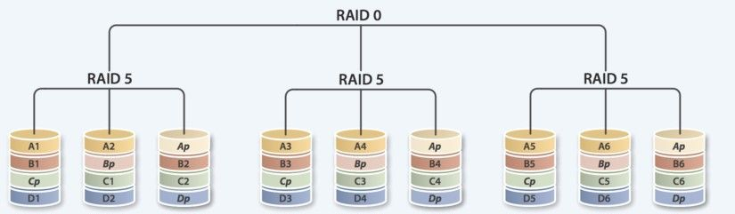

Linux系统中如何提高磁盘的读写性能，如何实现磁盘冗余，当磁盘快被占满时，又如何弹性拓展磁盘容量，RAID及LVM技术可以帮你轻松解决。
一、RAID概念及管理
RAID 廉价（独立）磁盘冗余阵列使用多个磁盘合成一个“阵列”来提供更好的性能、冗余，或者两种都提供。
RAID的作用：
提高IO能力: 磁盘并行读写
提高耐用性: 磁盘冗余来实现
级别：多块磁盘组织在一起的工作方式有所不同
RAID实现的方式：
- 外接式磁盘阵列：通过扩展卡提供适配能力
- 内接式RAID：主板集成RAID控制器
- 安装OS前在BIOS里配置
- 软件RAID：通过OS实现（生产环境很少用，一般用来测试模拟）
RAID级别
RAID0 条带卷，读写能力提升，但无容错能力，最少需2块磁盘组成，磁盘利用率100%
RAID1 镜像卷，具有一块硬盘的容错性，需要2,2N块磁盘组成，磁盘利用率50%
RAID4 牺牲了1块硬盘实现冗余，至少3块磁盘组成，磁盘利用率（n-1）n
RAID5 带奇偶校验的条带集，至少3块磁盘组成，磁盘利用率（n-1）n，一块硬盘损坏，
将大幅消耗系统性能， 造成宕机，应及时更换硬盘，性价比高
RAID6 牺牲了2块硬盘实现冗余，至少4块磁盘组成，磁盘利用率（n-2）n
RAID10 先做RAID1,再做RAID0，容错性相较于RAID01更强，至少4块磁盘组成，空间利用率50%。
生产中有条件情况下建议使用RAID10
RAID01 先做RAID0,再做RAID1，至少4块磁盘组成，容错性较RAID10稍弱，空间利用率50%
RAID50 先做RAID5,再做RAID0，提供了接近RAID 10性能、可用性以及接近RAID 5成本的特性，具
有较好的整体性价比，至少6块磁盘组成，空间利用率（n-2）n
JBOD 可用空间sum（S1,S2…），性能无提升，至少需要2块磁盘，磁盘利用率100%
注：目前RAID2-4已基本淘汰，RAID0生产中也少用，RAID1,RAID5,RAID10,RAID01常见
常见RAID图形示意
RAID0 条带卷，读写能力提升，但无容错能力，最少需2块磁盘组成，磁盘利用率100%
RAID1 镜像卷，读性能提升，写性能下降具有一块硬盘的容错性，需要2,2N块磁盘组成，磁盘利用率50%

RAID5 带奇偶校验的条带集，与RAID4校验位固定在一个磁盘上相比，RAID5校验位在不同磁盘上不
断更替；至少3块磁盘组成，磁盘利用率（n-1）n，一块硬盘损坏，将大幅消耗系统性能，造成宕机，应
及时更换硬盘，性价比高
RAID01 先做RAID0,再做RAID1，至少4块磁盘组成，容错性较RAID10稍弱，空间利用率50%
RAID10 先做RAID1,再做RAID0，容错性相较于RAID01更强，至少4块磁盘组成，空间利用率50%。
生产中有条件情况下建议使用RAID10
RAID50 先做RAID5,再做RAID0，提供了接近RAID 10性能、可用性以及接近RAID 5成本的特性，具有较好的整体性价比，至少6块磁盘组成，空间利用率（n-2）n

JBOD 可用空间sum（S1,S2…），性能无提升，无冗余能力，至少需要2块磁盘，磁盘利用率100%
RAID按实现方式的不同一般分为硬件RAID和软件RAID，生产环境中多数使用硬件RAID，在下面的实
验测试环境中我们使用软件RAID。
软件RAID
mdadm 命令 为软RAID提供管理界面
为空余磁盘添加冗余
结合内核中的md（multi devices）
RAID设备可命名为/dev/md0、/dev/md1、/dev/md2、/dev/md3等
软件RAID的实现
mdadm：模式化的工具
语法格式：
1 | mdadm [mode] <raiddevice> [options]<component-devices> |
支持的RAID级别：LINEAR, RAID0, RAID1, RAID4,RAID5, RAID6, RAID10
模式：
1 | 创建：-C |
-D：显示raid的详细信息: mdadm -D /dev/md#
观察md的状态：cat /proc/mdstat
软RAID配置示例
使用mdadm创建并定义RAID设备
1 | mdadm -C /dev/md0 -a yes -l 5 -n 3 -x 1 /dev/sdb1 |
用文件系统对每个RAID设备进行格式化
1 | mke2fs -j /dev/md0 |
测试RAID设备
使用mdadm检查RAID设备的状况
1 | mdadm --detail|D /dev/md0 |
增加新的成员
1 | mdadm –G /dev/md0 –n4 -a /dev/sdf1 |
软RAID测试和修复
模拟磁盘故障
mdadm /dev/md0 -f /dev/sda1
移除磁盘
mdadm /dev/md0 –r /dev/sda1
从软件RAID磁盘修复磁盘故障
替换出故障的磁盘然后开机
在备用驱动器上重建分区
mdadm /dev/md0 -a /dev/sda1
mdadm、/proc/mdstat及系统日志信息
软RAID管理
生成配置文件：mdadm –D –s >> /etc/mdadm.conf
停止设备：mdadm –S /dev/md0
激活设备：mdadm –A –s /dev/md0 激活
强制启动：mdadm –R /dev/md0
删除raid信息：mdadm –zero-superblock /dev/sdb1
dd if=/dev/zero of=/dev/sdb1 破坏文件系统
mdadm -C /dev/md0 -a yes -l5 -n4 -x1 /dev/sd{b,c,d,e}1 创建一个RAID5,包含4块硬盘，一块空闲盘
mdadm -D /dev/md0 查看raid信息
mkfs.ext4 /dev/md0 -L raid 添加文件系统，添加卷标为raid
umount /mnt/raid/ 停用
mdadm -S /dev/md0 禁用raid
-A 启用raid
mdadm /dev/md0 -f /dev/sdd1 模拟损坏硬盘
mdadm /dev/md0 -r /dev/sdd1 移除损坏硬盘
mdadm /dev/md0 -a /dev/sda1 更换一个新硬盘
mdadm -G /dev/md0 -n4 -a /dev/sdb3 拓展RAID一个硬盘
ll /etc/mdadm/conf
mdadm -Ds /dev/md0 > /etc/mdadm/conf 保存配置文件
将来重启或停止raid服务不会出现找不到配置文件的情况
二、LVM逻辑卷介绍及使用
logical Volumes 逻辑卷
lvcreae ↑ 创建逻辑卷 ↑
Volime Group 卷组
vgcreate ↑ 创建卷组 ↑
Physical Volumes 物理卷
pvcreate ↑ 创建物理卷 ↑
Linux Block Devices Linux块设备
pv管理工具
显示物理卷
1 | pvs 简要 |
创建卷组
1 | pvcreate /dev/DEVICE |
vg管理工具
显示卷组
1 | vgs 简要 |
创建卷组
1 | vgcreate [-s #[kKmMgGtTpPeE]] 卷组名 各分区物理路径 |
lv管理工具
显示逻辑卷
1 | lvs 简要 |
创建逻辑卷
1 | lvcreate -L #[mMgGtT] -n 逻辑卷名 卷组名 |
lvcreate
常用选项
1 | -c 指定chunk大小 |
删除逻辑卷
1 | lvremove /dev/VG_NAME/LV_NAME |
重设文件系统大小
1 | fsadm [options] resize device [new_size[BKMGTEP]] |
LVM快照
快照是特殊的逻辑卷，它是在生成快照时存在的逻辑卷的准确拷贝
要注意快照不能替代备份作用，但可用于测试环境，在特殊情况下可代替备份效果。
快照生成时需要分配给它一定的空间，这些空间只有在原来的逻辑卷或者快照有所改变才会使用
这些空间，建立快照的卷大小只需要原始逻辑卷的15%-20%就可以了，也可以使用lvextend放大快照空
间要注意快照必须与被快照的LV在同一个卷组中，系统恢复时文件数量不能高于快照区的实际容量。
为现有逻辑卷创建快照与添加逻辑卷命令相同
lvcreate
创建快照常用选项：
1 | -l 指定PE数创建快照，或[%{VG|FREE|ORIGIN}] |
ext系列：
1 | lvcreate -n centoslv0-snapshot -s -L 1G -p r /dev/centos6lv0 |
xfs文件系统：
1 | lvcreate -n centoslv0-snapshot -s -L 1G -p r /dev/lv0 |
注：xfs文件系统不予许相同UUID设备进行挂载
1 | mount -o nouuid /dev/vg0/lv0-snopshot /mnt/lv0-snap |
恢复快照
1 | umount /mnt/snap/ |
注：快照会在合并恢复后自动删除
删除快照
1 | umount /mnt/vg0/lv0 |